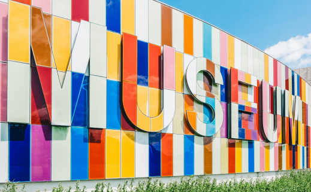
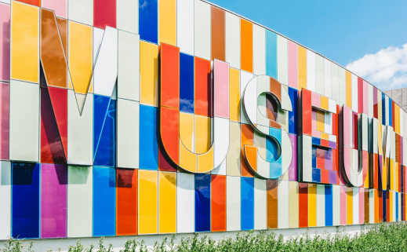

Visit
Hours
Monday: Closed
Tuesday: 10:00 – 16:00
Wednesday: 10:00 – 16:00
Location
The museum is located at Olav Kyrres Gate 04.
Admission
The entrance is free for all.
There are guided tours of the museum that leave every hour. These tours are 70 NOK per person and include a handy printed guide of the museum.
If you would like to organise a guided tour for your group of 6 or more people, please contact us to arrange the tour.
 
